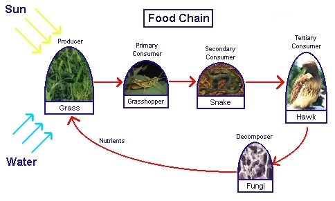
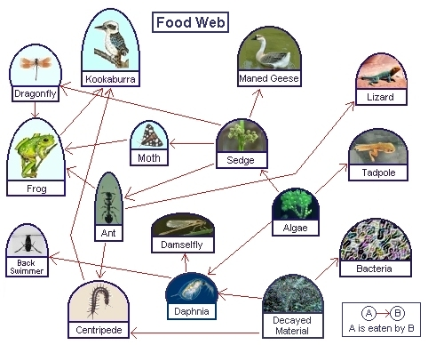
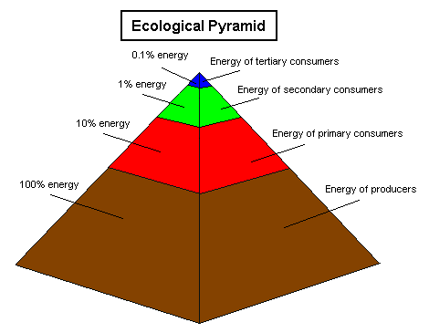

| Interesting Facts about Food Chains |
This section contains a brief description of the food chains and food webs in an ecosystem.
Introduction
In an ecosystem, plants capture the sun's energy and use it to convert inorganic compounds into energy-rich organic compounds1. This process of using the sun's energy to convert minerals (such as magnesium or nitrogen) in the soil into green leaves, or carrots, or strawberries, is called photosynthesis.
Photosynthesis is only the beginning of a chain of energy conversions. There are many types of animals that will eat the products of the photosynthesis process. Examples are deer eating shrub leaves, rabbits eating carrots, or worms eating grass. When these animals eat these plant products, food energy and organic compounds are transferred from the plants to the animals. These animals are in turn eaten by other animals, again transferring energy and organic compounds from one animal to another. Examples would be lions eating deer, foxes eating rabbits, or birds eating worms.
This chain of energy transferring from one species to another can continue several more times, but it eventually ends. It ends with the dead animals that are broken down and used as food or nutrition by bacteria and fungi. As these organisms, referred to as decomposers, feed from the dead animals, they break down the complex organic compounds into simple nutrients. Decomposers play a very important role in this world because they take care of breaking down (cleaning) many dead material. There are more than 100,000 different types of decomposer organisms! These simpler nutrients are returned to the soil and can be used again by the plants. The energy transformation chain starts all over again.
Here is a figure showing one such food and energy chain:

Names and word definitions
Producers. Organisms, such as plants, that produce their own food are called autotrophs. The autotrophs, as mentioned before, convert inorganic compounds into organic compounds. They are called producers because all of the species of the ecosystem depend on them.
Consumers. All the organisms that can not make their own food (and need producers) are called heterotrophs. In an ecosystem heterotrophs are called consumers because they depend on others. They obtain food by eating other organisms. There are different levels of consumers. Those that feed directly from producers, i.e. organisms that eat plant or plant products are called primary consumers. In the figure above the grasshopper is a primary consumer.
Organisms that feed on primary consumers are called secondary consumers. Those who feed on secondary consumers are tertiary consumers. In the figure above the snake acts as a secondary consumer and the hawk as a tertiary consumer. Some organisms, like the squirrel are at different levels. When the squirrel eats acorns or fruits (which are plant product), it is a primary consumer; however, when it eats insects or nestling birds, is it is a tertiary consumer.
Consumers are also classified depending on what they eat.
Herbivores are those that eat only plants or plant products. Example are grasshoppers, mice, rabbits, deer, beavers, moose, cows, sheep, goats and groundhogs.
Carnivores, on the other hand, are those that eat only other animals. Examples of carnivores are foxes, frogs, snakes, hawks, and spiders.
Omnivores are the last type and eat both plants (acting a primary consumers) and meat (acting as secondary or tertiary consumers). Examples of omnivores are:
Trophic level. The last word that is worth mentioning in this section is trophic level, which corresponds to the different levels or steps in the food chain. In other words, the producers, the consumers, and the decomposers are the main trophic levels.
- Bears --They eat insects, fish, moose, elk, deer, sheep as well as honey, grass, and sedges.
- Turtles -- They eat snails, crayfish, crickets, earthworms, but also lettuce, small plants, and algae.
- Monkeys -- They eat frogs and lizards as well as fruits, flowers, and leaves.
- Squirrels -- They eat insects, moths, bird eggs and nestling birds and also seeds, fruits, acorns, and nuts.
In looking at the previous picture, the concept of food chain looks very simple, but in reality it is more complex. Think about it. How many different animals eat grass? And from the Facts about Red-tailed Hawks page, how many different foods does the hawk eat? One doesn't find simple independent food chains in an ecosystem, but many interdependent and complex food chains that look more like a web and are therefore called food webs. A food web that shows the energy transformations in an ecosystem looks like this2:

As you can see from this picture, food webs, with all their dependencies, can be very complex, but somehow nature balances things out so that food webs last a long time. Many species share the same habitat, their populations survive for many years, and they all live happily together.
We described in the previous sections how energy and organic compounds are passed from one trophic level to the next. What was not mentioned is the efficiency of the transfer. In a highly efficient transfer almost all of the energy would be transferred -- 80% or more. In a low efficiency transfer very little energy would be transferred -- less than 20%. In a typical food chain, not all animals or plants are eaten by the next trophic level. In addition, there are portions or materials (such as beaks, shells, bones, etc.) that are also not eaten. That is why the transfer of matter and energy from one trophic level to the next is not an efficient one.
One way to calculate the energy transfer is by measuring or sizing the energy at one trophic level and then at the next. Calorie is a unit of measure used for energy. The energy transfer from one trophic level to the next is about 10%. For example, if there are 10,000 calories at one level, only 1,000 are transferred to the next. This 10% energy and material transfer rule can be depicted with an ecological pyramid that looks like this:

This pyramid helps one visualize the fact that in an ecological system there need to be many producing organisms at the bottom of the pyramid to be able to sustain just a couple of organisms at the top. In looking at the pyramid, can you guess how much larger the volume of each layer is as compared to the one just above it? Take a guess. It might not look like it but they are close to 10 times larger.
Final comments
Oaks rate a position at or very near the top of the wildlife food chain (or bottom of the ecological pyramid). They are the "staff of life" for many wild life species. The greatest food value comes from the acorn, especially during the winter season when other foods are scarce.
Squirrels, which are omnivores, are neither at the bottom or the top of the food chain. Since the feed from producers as well as primary consumers, one could say that they occupy two layers in the pyramid.
Hawks, which are mature birds of prey, are at the top of the their food chain and of the ecological pyramid.
References
[Note 1] -- Carbon, the sixth element in the Periodic Table, is fundamental when talking about organic and inorganic matter. Here is a reference to learn a lot about Carbon.
[Note 2] -- This food web is a real one from the Wetlands in Bunbury which is in the west coast of Australia. It was developed by Newton Moore Senior High School Biology students as part of a great project to rehabilitate the wetlands that were becoming a dumping ground for garden refuse. Make sure to visit their Wetlands site which describes the wonderful project with great detail or the continuation of the original one Wetlands Wonderland. As an additional note, the food web shown in the picture is not complete because of lack of space. It is missing several species such as: butterflies, wattle birds, black ducks, mosquito larvae, earthworms, and more.
[Reference 1] --Environment Protection: You can click on this link that will use google's search engine to give you a list of sites with information on ways to protect the environment.
Last Updated:
Arcytech
Java Home
Page
Provide
Feedback